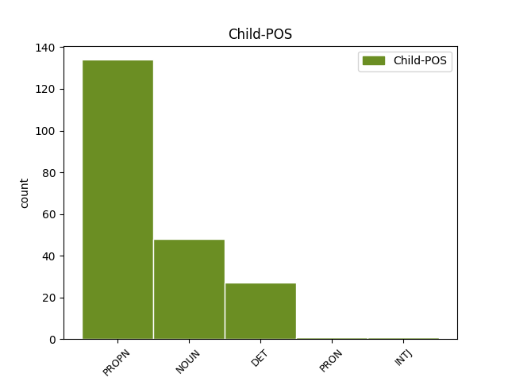

Distribution of features within this leaf

Agreement Rules sorted by frequency.
- When the dependent token is the flat multiword expression(flat@name) of the head token, and the head token is PROPN and the dependent token is PROPN.
1 Is _ _ _ _ 0 _ _ _
2 deacair _ _ _ _ 0 _ _ _
3 a _ _ _ _ 0 _ _ _
4 shamhlú _ _ _ _ 0 _ _ _
5 conas _ _ _ _ 0 _ _ _
6 a _ _ _ _ 0 _ _ _
7 d' _ _ _ _ 0 _ _ _
8 fhéadfadh _ _ _ _ 0 _ _ _
9 Mícheál Mícheál PROPN Noun Gender=Masc|Number=Sing 0 _ _ _
10 Ó _ _ _ _ 0 _ _ _
11 Móráin Móráin PROPN Noun Gender=Masc|Number=Sing 9 flat@name _ _
12 gníomhú _ _ _ _ 0 _ _ _
13 mar _ _ _ _ 0 _ _ _
14 thraenálaí _ _ _ _ 0 _ _ _
15 gan _ _ _ _ 0 _ _ _
16 lántacaíocht _ _ _ _ 0 _ _ _
17 ó _ _ _ _ 0 _ _ _
18 na _ _ _ _ 0 _ _ _
19 himreoirí _ _ _ _ 0 _ _ _
20 . _ _ _ _ 0 _ _ _
1 Tá _ _ _ _ 0 _ _ _
2 318,000 _ _ _ _ 0 _ _ _
3 de _ _ _ _ 0 _ _ _
4 bhaill _ _ _ _ 0 _ _ _
5 ag _ _ _ _ 0 _ _ _
6 Eaglais Eaglais PROPN Noun Gender=Fem|Number=Sing 0 _ _ _
7 Phreispitéireach _ _ _ _ 0 _ _ _
8 na _ _ _ _ 0 _ _ _
9 hÉireann Éire PROPN Noun Case=Gen|Definite=Def|Gender=Fem|Number=Sing 6 flat _ _
10 agus _ _ _ _ 0 _ _ _
11 friothálann _ _ _ _ 0 _ _ _
12 ar _ _ _ _ 0 _ _ _
13 an _ _ _ _ 0 _ _ _
14 oileán _ _ _ _ 0 _ _ _
15 go _ _ _ _ 0 _ _ _
16 léir _ _ _ _ 0 _ _ _
17 . _ _ _ _ 0 _ _ _
1 Na _ _ _ _ 0 _ _ _
2 Toghranna _ _ _ _ 0 _ _ _
3 Ceantair _ _ _ _ 0 _ _ _
4 seo _ _ _ _ 0 _ _ _
5 a _ _ _ _ 0 _ _ _
6 leanas _ _ _ _ 0 _ _ _
7 : _ _ _ _ 0 _ _ _
8 Baile _ _ _ _ 0 _ _ _
9 an _ _ _ _ 0 _ _ _
10 Tóchair _ _ _ _ 0 _ _ _
11 Thoir _ _ _ _ 0 _ _ _
12 , _ _ _ _ 0 _ _ _
13 Baile _ _ _ _ 0 _ _ _
14 na _ _ _ _ 0 _ _ _
15 Cille _ _ _ _ 0 _ _ _
16 , _ _ _ _ 0 _ _ _
17 Lios _ _ _ _ 0 _ _ _
18 Conaidh _ _ _ _ 0 _ _ _
19 , _ _ _ _ 0 _ _ _
20 Droim _ _ _ _ 0 _ _ _
21 Fionn _ _ _ _ 0 _ _ _
22 , _ _ _ _ 0 _ _ _
23 Baile _ _ _ _ 0 _ _ _
24 an _ _ _ _ 0 _ _ _
25 Mhóta _ _ _ _ 0 _ _ _
26 , _ _ _ _ 0 _ _ _
27 Cluain _ _ _ _ 0 _ _ _
28 Eochaille _ _ _ _ 0 _ _ _
29 , _ _ _ _ 0 _ _ _
30 Liatroim _ _ _ _ 0 _ _ _
31 , _ _ _ _ 0 _ _ _
32 Tobar _ _ _ _ 0 _ _ _
33 an _ _ _ _ 0 _ _ _
34 Choire _ _ _ _ 0 _ _ _
35 , _ _ _ _ 0 _ _ _
36 Cill _ _ _ _ 0 _ _ _
37 Toraí _ _ _ _ 0 _ _ _
38 , _ _ _ _ 0 _ _ _
39 Coill _ _ _ _ 0 _ _ _
40 Mhór _ _ _ _ 0 _ _ _
41 , _ _ _ _ 0 _ _ _
42 Cill _ _ _ _ 0 _ _ _
43 Fraoigh _ _ _ _ 0 _ _ _
44 , _ _ _ _ 0 _ _ _
45 Cúil _ _ _ _ 0 _ _ _
46 Ó _ _ _ _ 0 _ _ _
47 bhFinn _ _ _ _ 0 _ _ _
48 , _ _ _ _ 0 _ _ _
49 Cill _ _ _ _ 0 _ _ _
50 Athracht _ _ _ _ 0 _ _ _
51 , _ _ _ _ 0 _ _ _
52 Teampall _ _ _ _ 0 _ _ _
53 an _ _ _ _ 0 _ _ _
54 Mhanaigh _ _ _ _ 0 _ _ _
55 , _ _ _ _ 0 _ _ _
56 Eachineach _ _ _ _ 0 _ _ _
57 , _ _ _ _ 0 _ _ _
58 Cill _ _ _ _ 0 _ _ _
59 Mhic _ _ _ _ 0 _ _ _
60 Treana _ _ _ _ 0 _ _ _
61 , _ _ _ _ 0 _ _ _
62 Baile _ _ _ _ 0 _ _ _
63 na _ _ _ _ 0 _ _ _
64 Sí _ _ _ _ 0 _ _ _
65 , _ _ _ _ 0 _ _ _
66 Seanchua _ _ _ _ 0 _ _ _
67 , _ _ _ _ 0 _ _ _
68 Droim _ _ _ _ 0 _ _ _
69 Colm _ _ _ _ 0 _ _ _
70 , _ _ _ _ 0 _ _ _
71 Baile _ _ _ _ 0 _ _ _
72 idir _ _ _ _ 0 _ _ _
73 Dhá _ _ _ _ 0 _ _ _
74 Abhainn _ _ _ _ 0 _ _ _
75 , _ _ _ _ 0 _ _ _
76 Achadh _ _ _ _ 0 _ _ _
77 Mhór _ _ _ _ 0 _ _ _
78 , _ _ _ _ 0 _ _ _
79 Breicshliabh _ _ _ _ 0 _ _ _
80 , _ _ _ _ 0 _ _ _
81 Droim _ _ _ _ 0 _ _ _
82 Ráithe _ _ _ _ 0 _ _ _
83 , _ _ _ _ 0 _ _ _
84 Tuaim _ _ _ _ 0 _ _ _
85 Fhobhair _ _ _ _ 0 _ _ _
86 , _ _ _ _ 0 _ _ _
87 Cill _ _ _ _ 0 _ _ _
88 Sealbhaigh _ _ _ _ 0 _ _ _
89 , _ _ _ _ 0 _ _ _
90 Cill _ _ _ _ 0 _ _ _
91 Duibh _ _ _ _ 0 _ _ _
92 Dúin _ _ _ _ 0 _ _ _
93 , _ _ _ _ 0 _ _ _
94 Cill Cill PROPN Noun Gender=Masc|Number=Sing 0 _ _ _
95 Dá _ _ _ _ 0 _ _ _
96 Loch _ _ _ _ 0 _ _ _
97 , _ _ _ _ 0 _ _ _
98 Cartrún Cartrún PROPN Noun Gender=Masc|Number=Sing 94 conj _ SpaceAfter=No
99 , _ _ _ _ 0 _ _ _
100 Cúil _ _ _ _ 0 _ _ _
101 Áine _ _ _ _ 0 _ _ _
102 , _ _ _ _ 0 _ _ _
103 Abhainn _ _ _ _ 0 _ _ _
104 Mhór _ _ _ _ 0 _ _ _
105 , _ _ _ _ 0 _ _ _
106 An _ _ _ _ 0 _ _ _
107 Teampall _ _ _ _ 0 _ _ _
108 , _ _ _ _ 0 _ _ _
109 Eanach _ _ _ _ 0 _ _ _
110 , _ _ _ _ 0 _ _ _
111 Carraig _ _ _ _ 0 _ _ _
112 Beannchair _ _ _ _ 0 _ _ _
113 , _ _ _ _ 0 _ _ _
114 Cúil _ _ _ _ 0 _ _ _
115 Mhuine _ _ _ _ 0 _ _ _
116 agus _ _ _ _ 0 _ _ _
117 Baile _ _ _ _ 0 _ _ _
118 an _ _ _ _ 0 _ _ _
119 Tóchair _ _ _ _ 0 _ _ _
120 Thiar _ _ _ _ 0 _ _ _
121 . _ _ _ _ 0 _ _ _
1 Ba _ _ _ _ 0 _ _ _
2 chóir _ _ _ _ 0 _ _ _
3 go _ _ _ _ 0 _ _ _
4 mbeadh _ _ _ _ 0 _ _ _
5 an _ _ _ _ 0 _ _ _
6 Rialtas _ _ _ _ 0 _ _ _
7 in _ _ _ _ 0 _ _ _
8 ann _ _ _ _ 0 _ _ _
9 cur _ _ _ _ 0 _ _ _
10 ar _ _ _ _ 0 _ _ _
11 na _ _ _ _ 0 _ _ _
12 comhlachtaí _ _ _ _ 0 _ _ _
13 seo _ _ _ _ 0 _ _ _
14 scéim _ _ _ _ 0 _ _ _
15 chur _ _ _ _ 0 _ _ _
16 chun _ _ _ _ 0 _ _ _
17 cinn _ _ _ _ 0 _ _ _
18 na na DET Art Case=Gen|Definite=Def|Gender=Fem|Number=Sing|PronType=Art 19 det _ _
19 Gaeilge Gaeilge PROPN Noun Case=Gen|Definite=Def|Gender=Fem|Number=Sing 0 _ _ _
20 a _ _ _ _ 0 _ _ _
21 sholáthar _ _ _ _ 0 _ _ _
22 agus _ _ _ _ 0 _ _ _
23 a _ _ _ _ 0 _ _ _
24 chur _ _ _ _ 0 _ _ _
25 i _ _ _ _ 0 _ _ _
26 bhfeidhm _ _ _ _ 0 _ _ _
27 sa _ _ _ _ 0 _ _ _
28 chaoi _ _ _ _ 0 _ _ _
29 is _ _ _ _ 0 _ _ _
30 nach _ _ _ _ 0 _ _ _
31 mbeidís _ _ _ _ 0 _ _ _
32 in _ _ _ _ 0 _ _ _
33 ann _ _ _ _ 0 _ _ _
34 a _ _ _ _ 0 _ _ _
35 rá _ _ _ _ 0 _ _ _
36 nach _ _ _ _ 0 _ _ _
37 bhfuil _ _ _ _ 0 _ _ _
38 siad _ _ _ _ 0 _ _ _
39 sásta _ _ _ _ 0 _ _ _
40 le _ _ _ _ 0 _ _ _
41 rud _ _ _ _ 0 _ _ _
42 agus _ _ _ _ 0 _ _ _
43 gur _ _ _ _ 0 _ _ _
44 mhaith _ _ _ _ 0 _ _ _
45 leo _ _ _ _ 0 _ _ _
46 athrú _ _ _ _ 0 _ _ _
47 eile _ _ _ _ 0 _ _ _
48 nó _ _ _ _ 0 _ _ _
49 teacht _ _ _ _ 0 _ _ _
50 ar _ _ _ _ 0 _ _ _
51 ais _ _ _ _ 0 _ _ _
52 chun _ _ _ _ 0 _ _ _
53 moill _ _ _ _ 0 _ _ _
54 a _ _ _ _ 0 _ _ _
55 chur _ _ _ _ 0 _ _ _
56 ar _ _ _ _ 0 _ _ _
57 an _ _ _ _ 0 _ _ _
58 bpróiseas _ _ _ _ 0 _ _ _
59 . _ _ _ _ 0 _ _ _
1 Na _ _ _ _ 0 _ _ _
2 Toghranna _ _ _ _ 0 _ _ _
3 Ceantair _ _ _ _ 0 _ _ _
4 seo _ _ _ _ 0 _ _ _
5 a _ _ _ _ 0 _ _ _
6 leanas _ _ _ _ 0 _ _ _
7 : _ _ _ _ 0 _ _ _
8 Baile _ _ _ _ 0 _ _ _
9 an _ _ _ _ 0 _ _ _
10 Tóchair _ _ _ _ 0 _ _ _
11 Thoir _ _ _ _ 0 _ _ _
12 , _ _ _ _ 0 _ _ _
13 Baile _ _ _ _ 0 _ _ _
14 na _ _ _ _ 0 _ _ _
15 Cille _ _ _ _ 0 _ _ _
16 , _ _ _ _ 0 _ _ _
17 Lios _ _ _ _ 0 _ _ _
18 Conaidh _ _ _ _ 0 _ _ _
19 , _ _ _ _ 0 _ _ _
20 Droim _ _ _ _ 0 _ _ _
21 Fionn _ _ _ _ 0 _ _ _
22 , _ _ _ _ 0 _ _ _
23 Baile _ _ _ _ 0 _ _ _
24 an _ _ _ _ 0 _ _ _
25 Mhóta _ _ _ _ 0 _ _ _
26 , _ _ _ _ 0 _ _ _
27 Cluain _ _ _ _ 0 _ _ _
28 Eochaille _ _ _ _ 0 _ _ _
29 , _ _ _ _ 0 _ _ _
30 Liatroim _ _ _ _ 0 _ _ _
31 , _ _ _ _ 0 _ _ _
32 Tobar _ _ _ _ 0 _ _ _
33 an _ _ _ _ 0 _ _ _
34 Choire _ _ _ _ 0 _ _ _
35 , _ _ _ _ 0 _ _ _
36 Cill _ _ _ _ 0 _ _ _
37 Toraí _ _ _ _ 0 _ _ _
38 , _ _ _ _ 0 _ _ _
39 Coill _ _ _ _ 0 _ _ _
40 Mhór _ _ _ _ 0 _ _ _
41 , _ _ _ _ 0 _ _ _
42 Cill _ _ _ _ 0 _ _ _
43 Fraoigh _ _ _ _ 0 _ _ _
44 , _ _ _ _ 0 _ _ _
45 Cúil _ _ _ _ 0 _ _ _
46 Ó _ _ _ _ 0 _ _ _
47 bhFinn _ _ _ _ 0 _ _ _
48 , _ _ _ _ 0 _ _ _
49 Cill _ _ _ _ 0 _ _ _
50 Athracht _ _ _ _ 0 _ _ _
51 , _ _ _ _ 0 _ _ _
52 Teampall _ _ _ _ 0 _ _ _
53 an _ _ _ _ 0 _ _ _
54 Mhanaigh _ _ _ _ 0 _ _ _
55 , _ _ _ _ 0 _ _ _
56 Eachineach _ _ _ _ 0 _ _ _
57 , _ _ _ _ 0 _ _ _
58 Cill _ _ _ _ 0 _ _ _
59 Mhic _ _ _ _ 0 _ _ _
60 Treana _ _ _ _ 0 _ _ _
61 , _ _ _ _ 0 _ _ _
62 Baile _ _ _ _ 0 _ _ _
63 na _ _ _ _ 0 _ _ _
64 Sí _ _ _ _ 0 _ _ _
65 , _ _ _ _ 0 _ _ _
66 Seanchua _ _ _ _ 0 _ _ _
67 , _ _ _ _ 0 _ _ _
68 Droim _ _ _ _ 0 _ _ _
69 Colm _ _ _ _ 0 _ _ _
70 , _ _ _ _ 0 _ _ _
71 Baile _ _ _ _ 0 _ _ _
72 idir _ _ _ _ 0 _ _ _
73 Dhá _ _ _ _ 0 _ _ _
74 Abhainn _ _ _ _ 0 _ _ _
75 , _ _ _ _ 0 _ _ _
76 Achadh _ _ _ _ 0 _ _ _
77 Mhór _ _ _ _ 0 _ _ _
78 , _ _ _ _ 0 _ _ _
79 Breicshliabh _ _ _ _ 0 _ _ _
80 , _ _ _ _ 0 _ _ _
81 Droim _ _ _ _ 0 _ _ _
82 Ráithe _ _ _ _ 0 _ _ _
83 , _ _ _ _ 0 _ _ _
84 Tuaim _ _ _ _ 0 _ _ _
85 Fhobhair _ _ _ _ 0 _ _ _
86 , _ _ _ _ 0 _ _ _
87 Cill _ _ _ _ 0 _ _ _
88 Sealbhaigh _ _ _ _ 0 _ _ _
89 , _ _ _ _ 0 _ _ _
90 Cill _ _ _ _ 0 _ _ _
91 Duibh _ _ _ _ 0 _ _ _
92 Dúin _ _ _ _ 0 _ _ _
93 , _ _ _ _ 0 _ _ _
94 Cill _ _ _ _ 0 _ _ _
95 Dá _ _ _ _ 0 _ _ _
96 Loch _ _ _ _ 0 _ _ _
97 , _ _ _ _ 0 _ _ _
98 Cartrún _ _ _ _ 0 _ _ _
99 , _ _ _ _ 0 _ _ _
100 Cúil _ _ _ _ 0 _ _ _
101 Áine _ _ _ _ 0 _ _ _
102 , _ _ _ _ 0 _ _ _
103 Abhainn _ _ _ _ 0 _ _ _
104 Mhór _ _ _ _ 0 _ _ _
105 , _ _ _ _ 0 _ _ _
106 An _ _ _ _ 0 _ _ _
107 Teampall _ _ _ _ 0 _ _ _
108 , _ _ _ _ 0 _ _ _
109 Eanach _ _ _ _ 0 _ _ _
110 , _ _ _ _ 0 _ _ _
111 Carraig _ _ _ _ 0 _ _ _
112 Beannchair _ _ _ _ 0 _ _ _
113 , _ _ _ _ 0 _ _ _
114 Cúil _ _ _ _ 0 _ _ _
115 Mhuine _ _ _ _ 0 _ _ _
116 agus _ _ _ _ 0 _ _ _
117 Baile Baile PROPN Noun Gender=Masc|Number=Sing 0 _ _ _
118 an _ _ _ _ 0 _ _ _
119 Tóchair tóchar NOUN Noun Case=Gen|Gender=Masc|Number=Sing 117 flat _ _
120 Thiar _ _ _ _ 0 _ _ _
121 . _ _ _ _ 0 _ _ _
1 Na _ _ _ _ 0 _ _ _
2 Toghranna _ _ _ _ 0 _ _ _
3 Ceantair _ _ _ _ 0 _ _ _
4 seo _ _ _ _ 0 _ _ _
5 a _ _ _ _ 0 _ _ _
6 leanas _ _ _ _ 0 _ _ _
7 : _ _ _ _ 0 _ _ _
8 Baile _ _ _ _ 0 _ _ _
9 an _ _ _ _ 0 _ _ _
10 Tóchair _ _ _ _ 0 _ _ _
11 Thoir _ _ _ _ 0 _ _ _
12 , _ _ _ _ 0 _ _ _
13 Baile _ _ _ _ 0 _ _ _
14 na _ _ _ _ 0 _ _ _
15 Cille _ _ _ _ 0 _ _ _
16 , _ _ _ _ 0 _ _ _
17 Lios _ _ _ _ 0 _ _ _
18 Conaidh _ _ _ _ 0 _ _ _
19 , _ _ _ _ 0 _ _ _
20 Droim _ _ _ _ 0 _ _ _
21 Fionn _ _ _ _ 0 _ _ _
22 , _ _ _ _ 0 _ _ _
23 Baile _ _ _ _ 0 _ _ _
24 an _ _ _ _ 0 _ _ _
25 Mhóta _ _ _ _ 0 _ _ _
26 , _ _ _ _ 0 _ _ _
27 Cluain _ _ _ _ 0 _ _ _
28 Eochaille _ _ _ _ 0 _ _ _
29 , _ _ _ _ 0 _ _ _
30 Liatroim _ _ _ _ 0 _ _ _
31 , _ _ _ _ 0 _ _ _
32 Tobar _ _ _ _ 0 _ _ _
33 an _ _ _ _ 0 _ _ _
34 Choire _ _ _ _ 0 _ _ _
35 , _ _ _ _ 0 _ _ _
36 Cill _ _ _ _ 0 _ _ _
37 Toraí _ _ _ _ 0 _ _ _
38 , _ _ _ _ 0 _ _ _
39 Coill _ _ _ _ 0 _ _ _
40 Mhór _ _ _ _ 0 _ _ _
41 , _ _ _ _ 0 _ _ _
42 Cill _ _ _ _ 0 _ _ _
43 Fraoigh _ _ _ _ 0 _ _ _
44 , _ _ _ _ 0 _ _ _
45 Cúil _ _ _ _ 0 _ _ _
46 Ó _ _ _ _ 0 _ _ _
47 bhFinn _ _ _ _ 0 _ _ _
48 , _ _ _ _ 0 _ _ _
49 Cill _ _ _ _ 0 _ _ _
50 Athracht _ _ _ _ 0 _ _ _
51 , _ _ _ _ 0 _ _ _
52 Teampall _ _ _ _ 0 _ _ _
53 an _ _ _ _ 0 _ _ _
54 Mhanaigh _ _ _ _ 0 _ _ _
55 , _ _ _ _ 0 _ _ _
56 Eachineach _ _ _ _ 0 _ _ _
57 , _ _ _ _ 0 _ _ _
58 Cill _ _ _ _ 0 _ _ _
59 Mhic _ _ _ _ 0 _ _ _
60 Treana _ _ _ _ 0 _ _ _
61 , _ _ _ _ 0 _ _ _
62 Baile _ _ _ _ 0 _ _ _
63 na _ _ _ _ 0 _ _ _
64 Sí _ _ _ _ 0 _ _ _
65 , _ _ _ _ 0 _ _ _
66 Seanchua _ _ _ _ 0 _ _ _
67 , _ _ _ _ 0 _ _ _
68 Droim _ _ _ _ 0 _ _ _
69 Colm _ _ _ _ 0 _ _ _
70 , _ _ _ _ 0 _ _ _
71 Baile _ _ _ _ 0 _ _ _
72 idir _ _ _ _ 0 _ _ _
73 Dhá _ _ _ _ 0 _ _ _
74 Abhainn _ _ _ _ 0 _ _ _
75 , _ _ _ _ 0 _ _ _
76 Achadh _ _ _ _ 0 _ _ _
77 Mhór _ _ _ _ 0 _ _ _
78 , _ _ _ _ 0 _ _ _
79 Breicshliabh Breicshliabh PROPN Noun Gender=Masc|Number=Sing 0 _ _ _
80 , _ _ _ _ 0 _ _ _
81 Droim droim NOUN Noun Gender=Masc|Number=Sing 79 conj _ _
82 Ráithe _ _ _ _ 0 _ _ _
83 , _ _ _ _ 0 _ _ _
84 Tuaim _ _ _ _ 0 _ _ _
85 Fhobhair _ _ _ _ 0 _ _ _
86 , _ _ _ _ 0 _ _ _
87 Cill _ _ _ _ 0 _ _ _
88 Sealbhaigh _ _ _ _ 0 _ _ _
89 , _ _ _ _ 0 _ _ _
90 Cill _ _ _ _ 0 _ _ _
91 Duibh _ _ _ _ 0 _ _ _
92 Dúin _ _ _ _ 0 _ _ _
93 , _ _ _ _ 0 _ _ _
94 Cill _ _ _ _ 0 _ _ _
95 Dá _ _ _ _ 0 _ _ _
96 Loch _ _ _ _ 0 _ _ _
97 , _ _ _ _ 0 _ _ _
98 Cartrún _ _ _ _ 0 _ _ _
99 , _ _ _ _ 0 _ _ _
100 Cúil _ _ _ _ 0 _ _ _
101 Áine _ _ _ _ 0 _ _ _
102 , _ _ _ _ 0 _ _ _
103 Abhainn _ _ _ _ 0 _ _ _
104 Mhór _ _ _ _ 0 _ _ _
105 , _ _ _ _ 0 _ _ _
106 An _ _ _ _ 0 _ _ _
107 Teampall _ _ _ _ 0 _ _ _
108 , _ _ _ _ 0 _ _ _
109 Eanach _ _ _ _ 0 _ _ _
110 , _ _ _ _ 0 _ _ _
111 Carraig _ _ _ _ 0 _ _ _
112 Beannchair _ _ _ _ 0 _ _ _
113 , _ _ _ _ 0 _ _ _
114 Cúil _ _ _ _ 0 _ _ _
115 Mhuine _ _ _ _ 0 _ _ _
116 agus _ _ _ _ 0 _ _ _
117 Baile _ _ _ _ 0 _ _ _
118 an _ _ _ _ 0 _ _ _
119 Tóchair _ _ _ _ 0 _ _ _
120 Thiar _ _ _ _ 0 _ _ _
121 . _ _ _ _ 0 _ _ _
1 Sa _ _ _ _ 0 _ _ _
2 bhliain _ _ _ _ 0 _ _ _
3 san _ _ _ _ 0 _ _ _
4 ghaibh _ _ _ _ 0 _ _ _
5 na _ _ _ _ 0 _ _ _
6 Turcaigh _ _ _ _ 0 _ _ _
7 François François PROPN Noun Gender=Masc 0 _ _ _
8 de _ _ _ _ 0 _ _ _
9 Vic _ _ _ _ 0 _ _ _
10 , _ _ _ _ 0 _ _ _
11 Tiarna tiarna NOUN Noun Gender=Masc|Number=Sing 7 appos _ _
12 Rieux _ _ _ _ 0 _ _ _
13 sa _ _ _ _ 0 _ _ _
14 bhFrainc _ _ _ _ 0 _ _ _
15 agus _ _ _ _ 0 _ _ _
16 é _ _ _ _ 0 _ _ _
17 ar _ _ _ _ 0 _ _ _
18 thuras _ _ _ _ 0 _ _ _
19 go _ _ _ _ 0 _ _ _
20 dtí _ _ _ _ 0 _ _ _
21 Vín _ _ _ _ 0 _ _ _
22 . _ _ _ _ 0 _ _ _
1 Ní _ _ _ _ 0 _ _ _
2 aithníonn _ _ _ _ 0 _ _ _
3 aon _ _ _ _ 0 _ _ _
4 duine _ _ _ _ 0 _ _ _
5 é _ _ _ _ 0 _ _ _
6 ach _ _ _ _ 0 _ _ _
7 tá _ _ _ _ 0 _ _ _
8 a _ _ _ _ 0 _ _ _
9 fhios _ _ _ _ 0 _ _ _
10 ag _ _ _ _ 0 _ _ _
11 Áthas _ _ _ _ 0 _ _ _
12 gurb _ _ _ _ 0 _ _ _
13 é _ _ _ _ 0 _ _ _
14 Donncha Donncha PROPN Noun Gender=Masc|Number=Sing 0 _ _ _
15 ( _ _ _ _ 0 _ _ _
16 Donatus Donatus PROPN Noun Gender=Masc|Number=Sing 14 appos _ SpaceAfter=No
17 ) _ _ _ _ 0 _ _ _
18 atá _ _ _ _ 0 _ _ _
19 ann _ _ _ _ 0 _ _ _
20 . _ _ _ _ 0 _ _ _
1 Tá _ _ _ _ 0 _ _ _
2 318,000 _ _ _ _ 0 _ _ _
3 de _ _ _ _ 0 _ _ _
4 bhaill _ _ _ _ 0 _ _ _
5 ag _ _ _ _ 0 _ _ _
6 Eaglais Eaglais PROPN Noun Gender=Fem|Number=Sing 0 _ _ _
7 Phreispitéireach _ _ _ _ 0 _ _ _
8 na na DET Art Case=Gen|Definite=Def|Gender=Fem|Number=Sing|PronType=Art 6 flat _ _
9 hÉireann _ _ _ _ 0 _ _ _
10 agus _ _ _ _ 0 _ _ _
11 friothálann _ _ _ _ 0 _ _ _
12 ar _ _ _ _ 0 _ _ _
13 an _ _ _ _ 0 _ _ _
14 oileán _ _ _ _ 0 _ _ _
15 go _ _ _ _ 0 _ _ _
16 léir _ _ _ _ 0 _ _ _
17 . _ _ _ _ 0 _ _ _
1 Dein Dein PROPN Noun Case=NomAcc|Gender=Masc|Number=Sing 0 _ _ _
2 é é PRON Pers Gender=Masc|Number=Sing|Person=3 1 comp:obj _ _
3 an _ _ _ _ 0 _ _ _
4 fhaid _ _ _ _ 0 _ _ _
5 is _ _ _ _ 0 _ _ _
6 atáimse _ _ _ _ 0 _ _ _
7 i _ _ _ _ 0 _ _ _
8 dteagmháil _ _ _ _ 0 _ _ _
9 leis _ _ _ _ 0 _ _ _
10 na _ _ _ _ 0 _ _ _
11 leaideanna _ _ _ _ 0 _ _ _
12 ag _ _ _ _ 0 _ _ _
13 an _ _ _ _ 0 _ _ _
14 gCeanncheathrú _ _ _ _ 0 _ _ _
15 . _ _ _ _ 0 _ _ _
1 Bhí _ _ _ _ 0 _ _ _
2 sí _ _ _ _ 0 _ _ _
3 ag _ _ _ _ 0 _ _ _
4 feidhmiú _ _ _ _ 0 _ _ _
5 mar _ _ _ _ 0 _ _ _
6 Phríomh Phríomh PROPN Noun Case=NomAcc|Gender=Masc|Number=Sing 0 _ _ _
7 Oide oide NOUN Noun Case=Gen|Gender=Masc|Number=Sing 6 compound _ _
8 sna _ _ _ _ 0 _ _ _
9 Cealla _ _ _ _ 0 _ _ _
10 Beaga _ _ _ _ 0 _ _ _
11 ón _ _ _ _ 0 _ _ _
12 bhliain _ _ _ _ 0 _ _ _
13 i _ _ _ _ 0 _ _ _
14 1973 _ _ _ _ 0 _ _ _
15 . _ _ _ _ 0 _ _ _
1 SEÁN Seán PROPN Noun Gender=Masc|Number=Sing 0 _ _ _
2 : _ _ _ _ 0 _ _ _
3 No No INTJ Itj Gender=Masc|Number=Sing 1 parataxis _ SpaceAfter=No
4 . _ _ _ _ 0 _ _ _
1 Fearacht _ _ _ _ 0 _ _ _
2 fhilí _ _ _ _ 0 _ _ _
3 Innti _ _ _ _ 0 _ _ _
4 , _ _ _ _ 0 _ _ _
5 agus _ _ _ _ 0 _ _ _
6 go _ _ _ _ 0 _ _ _
7 mórmhór _ _ _ _ 0 _ _ _
8 Liam _ _ _ _ 0 _ _ _
9 Ó _ _ _ _ 0 _ _ _
10 Muirthile _ _ _ _ 0 _ _ _
11 a _ _ _ _ 0 _ _ _
12 bhfuil _ _ _ _ 0 _ _ _
13 an _ _ _ _ 0 _ _ _
14 ceiliúradh _ _ _ _ 0 _ _ _
15 spleodrach _ _ _ _ 0 _ _ _
16 céanna _ _ _ _ 0 _ _ _
17 ar _ _ _ _ 0 _ _ _
18 a _ _ _ _ 0 _ _ _
19 bheith _ _ _ _ 0 _ _ _
20 beo _ _ _ _ 0 _ _ _
21 ag _ _ _ _ 0 _ _ _
22 sníomh _ _ _ _ 0 _ _ _
23 trína _ _ _ _ 0 _ _ _
24 shaothar _ _ _ _ 0 _ _ _
25 agus _ _ _ _ 0 _ _ _
26 go _ _ _ _ 0 _ _ _
27 háirithe _ _ _ _ 0 _ _ _
28 trína _ _ _ _ 0 _ _ _
29 dhán _ _ _ _ 0 _ _ _
30 fada _ _ _ _ 0 _ _ _
31 ' _ _ _ _ 0 _ _ _
32 Tine _ _ _ _ 0 _ _ _
33 Chnámh _ _ _ _ 0 _ _ _
34 ' _ _ _ _ 0 _ _ _
35 ( _ _ _ _ 0 _ _ _
36 Ó _ _ _ _ 0 _ _ _
37 Muirthile _ _ _ _ 0 _ _ _
38 1984 _ _ _ _ 0 _ _ _
39 , _ _ _ _ 0 _ _ _
40 87-112 _ _ _ _ 0 _ _ _
41 ) _ _ _ _ 0 _ _ _
42 , _ _ _ _ 0 _ _ _
43 gan _ _ _ _ 0 _ _ _
44 trácht _ _ _ _ 0 _ _ _
45 ar _ _ _ _ 0 _ _ _
46 Dhuibhneach _ _ _ _ 0 _ _ _
47 eile _ _ _ _ 0 _ _ _
48 , _ _ _ _ 0 _ _ _
49 Maidhc Maidhc PROPN Noun Gender=Masc|Number=Sing 0 _ _ _
50 Dainín dainín NOUN Noun Gender=Masc|Number=Sing 49 flat@name _ _
51 Ó _ _ _ _ 0 _ _ _
52 Sé _ _ _ _ 0 _ _ _
53 , _ _ _ _ 0 _ _ _
54 go _ _ _ _ 0 _ _ _
55 mórmhór _ _ _ _ 0 _ _ _
56 ina _ _ _ _ 0 _ _ _
57 úrscéal _ _ _ _ 0 _ _ _
58 Dochtúir _ _ _ _ 0 _ _ _
59 na _ _ _ _ 0 _ _ _
60 bPiast _ _ _ _ 0 _ _ _
61 ( _ _ _ _ 0 _ _ _
62 1993 _ _ _ _ 0 _ _ _
63 ) _ _ _ _ 0 _ _ _
64 , _ _ _ _ 0 _ _ _
65 ní _ _ _ _ 0 _ _ _
66 ualach _ _ _ _ 0 _ _ _
67 ar _ _ _ _ 0 _ _ _
68 Ó _ _ _ _ 0 _ _ _
69 Cíobháin _ _ _ _ 0 _ _ _
70 ar _ _ _ _ 0 _ _ _
71 shealbhaigh _ _ _ _ 0 _ _ _
72 sé _ _ _ _ 0 _ _ _
73 de _ _ _ _ 0 _ _ _
74 thraidisiún _ _ _ _ 0 _ _ _
75 ná _ _ _ _ 0 _ _ _
76 an _ _ _ _ 0 _ _ _
77 teanga _ _ _ _ 0 _ _ _
78 a _ _ _ _ 0 _ _ _
79 d' _ _ _ _ 0 _ _ _
80 iompair _ _ _ _ 0 _ _ _
81 an _ _ _ _ 0 _ _ _
82 traidisiún _ _ _ _ 0 _ _ _
83 sin _ _ _ _ 0 _ _ _
84 . _ _ _ _ 0 _ _ _
1 Ná _ _ _ _ 0 _ _ _
2 déan _ _ _ _ 0 _ _ _
3 dearmad _ _ _ _ 0 _ _ _
4 gurb _ _ _ _ 0 _ _ _
5 é _ _ _ _ 0 _ _ _
6 John John PROPN Noun Gender=Masc|Number=Sing 0 _ _ _
7 Edwards _ _ _ _ 0 _ _ _
8 a _ _ _ _ 0 _ _ _
9 thraenálaí traenálaí NOUN Noun Form=Len|Gender=Masc|Number=Sing 6 subj _ SpaceAfter=No
10 , _ _ _ _ 0 _ _ _
11 fear _ _ _ _ 0 _ _ _
12 atá _ _ _ _ 0 _ _ _
13 ina _ _ _ _ 0 _ _ _
14 shaineolaí _ _ _ _ 0 _ _ _
15 ag _ _ _ _ 0 _ _ _
16 ullmhú _ _ _ _ 0 _ _ _
17 capall _ _ _ _ 0 _ _ _
18 don _ _ _ _ 0 _ _ _
19 Cheltenham _ _ _ _ 0 _ _ _
20 Festival _ _ _ _ 0 _ _ _
21 ( _ _ _ _ 0 _ _ _
22 NH _ _ _ _ 0 _ _ _
23 ) _ _ _ _ 0 _ _ _
24 . _ _ _ _ 0 _ _ _
Disagree Examples:
1 Ar _ _ _ _ 0 _ _ _
2 fhágaint _ _ _ _ 0 _ _ _
3 slán _ _ _ _ 0 _ _ _
4 agus _ _ _ _ 0 _ _ _
5 beannacht _ _ _ _ 0 _ _ _
6 age _ _ _ _ 0 _ _ _
7 cé _ _ _ _ 0 _ _ _
8 na na DET Art Case=Gen|Definite=Def|Gender=Fem|Number=Sing|PronType=Art 9 det _ _
9 Coise Coise PROPN Noun Case=Gen|Gender=Masc|Number=Sing 0 _ _ _
10 an _ _ _ _ 0 _ _ _
11 tráthnóna _ _ _ _ 0 _ _ _
12 aoibhinn _ _ _ _ 0 _ _ _
13 caithiseach _ _ _ _ 0 _ _ _
14 Domhnaigh _ _ _ _ 0 _ _ _
15 seo _ _ _ _ 0 _ _ _
16 dhúinn _ _ _ _ 0 _ _ _
17 , _ _ _ _ 0 _ _ _
18 agus _ _ _ _ 0 _ _ _
19 agena _ _ _ _ 0 _ _ _
20 a _ _ _ _ 0 _ _ _
21 raibh _ _ _ _ 0 _ _ _
22 do _ _ _ _ 0 _ _ _
23 dhaoine _ _ _ _ 0 _ _ _
24 ina _ _ _ _ 0 _ _ _
25 seasamh _ _ _ _ 0 _ _ _
26 ann _ _ _ _ 0 _ _ _
27 , _ _ _ _ 0 _ _ _
28 cé _ _ _ _ 0 _ _ _
29 go _ _ _ _ 0 _ _ _
30 raibh _ _ _ _ 0 _ _ _
31 cuid _ _ _ _ 0 _ _ _
32 mhaith _ _ _ _ 0 _ _ _
33 ann _ _ _ _ 0 _ _ _
34 san _ _ _ _ 0 _ _ _
35 am _ _ _ _ 0 _ _ _
36 gcéanna _ _ _ _ 0 _ _ _
37 , _ _ _ _ 0 _ _ _
38 ní _ _ _ _ 0 _ _ _
39 raibh _ _ _ _ 0 _ _ _
40 cuma _ _ _ _ 0 _ _ _
41 na _ _ _ _ 0 _ _ _
42 hainnise _ _ _ _ 0 _ _ _
43 ná _ _ _ _ 0 _ _ _
44 na _ _ _ _ 0 _ _ _
45 bochtanacht _ _ _ _ 0 _ _ _
46 ar _ _ _ _ 0 _ _ _
47 aon _ _ _ _ 0 _ _ _
48 duine _ _ _ _ 0 _ _ _
49 acu _ _ _ _ 0 _ _ _
50 , _ _ _ _ 0 _ _ _
51 rud _ _ _ _ 0 _ _ _
52 ná _ _ _ _ 0 _ _ _
53 beadh _ _ _ _ 0 _ _ _
54 im _ _ _ _ 0 _ _ _
55 chumas _ _ _ _ 0 _ _ _
56 do _ _ _ _ 0 _ _ _
57 rá _ _ _ _ 0 _ _ _
58 leo _ _ _ _ 0 _ _ _
59 anois _ _ _ _ 0 _ _ _
60 dá _ _ _ _ 0 _ _ _
61 mbeinn _ _ _ _ 0 _ _ _
62 ann _ _ _ _ 0 _ _ _
63 , _ _ _ _ 0 _ _ _
64 comh _ _ _ _ 0 _ _ _
65 fada _ _ _ _ 0 _ _ _
66 lem _ _ _ _ 0 _ _ _
67 thuairim _ _ _ _ 0 _ _ _
68 . _ _ _ _ 0 _ _ _
1 Tugann _ _ _ _ 0 _ _ _
2 an _ _ _ _ 0 _ _ _
3 scannán _ _ _ _ 0 _ _ _
4 seo _ _ _ _ 0 _ _ _
5 léiriú _ _ _ _ 0 _ _ _
6 ar _ _ _ _ 0 _ _ _
7 a _ _ _ _ 0 _ _ _
8 gcaidreamh _ _ _ _ 0 _ _ _
9 lena _ _ _ _ 0 _ _ _
10 chéile _ _ _ _ 0 _ _ _
11 agus _ _ _ _ 0 _ _ _
12 le _ _ _ _ 0 _ _ _
13 muintir _ _ _ _ 0 _ _ _
14 Kennedy _ _ _ _ 0 _ _ _
15 , _ _ _ _ 0 _ _ _
16 Marilyn _ _ _ _ 0 _ _ _
17 Monroe _ _ _ _ 0 _ _ _
18 , _ _ _ _ 0 _ _ _
19 Sam Sam PROPN Noun Case=NomAcc|Gender=Masc|Number=Sing 0 _ _ _
20 Giancano _ _ _ _ 0 _ _ _
21 , _ _ _ _ 0 _ _ _
22 Judith Judith PROPN Noun Case=NomAcc|Gender=Fem|Number=Sing 19 conj _ _
23 Cambell _ _ _ _ 0 _ _ _
24 agus _ _ _ _ 0 _ _ _
25 an _ _ _ _ 0 _ _ _
26 FBI _ _ _ _ 0 _ _ _
27 . _ _ _ _ 0 _ _ _
1 Tugann _ _ _ _ 0 _ _ _
2 an _ _ _ _ 0 _ _ _
3 scannán _ _ _ _ 0 _ _ _
4 seo _ _ _ _ 0 _ _ _
5 léiriú _ _ _ _ 0 _ _ _
6 ar _ _ _ _ 0 _ _ _
7 a _ _ _ _ 0 _ _ _
8 gcaidreamh _ _ _ _ 0 _ _ _
9 lena _ _ _ _ 0 _ _ _
10 chéile _ _ _ _ 0 _ _ _
11 agus _ _ _ _ 0 _ _ _
12 le _ _ _ _ 0 _ _ _
13 muintir _ _ _ _ 0 _ _ _
14 Kennedy _ _ _ _ 0 _ _ _
15 , _ _ _ _ 0 _ _ _
16 Marilyn _ _ _ _ 0 _ _ _
17 Monroe _ _ _ _ 0 _ _ _
18 , _ _ _ _ 0 _ _ _
19 Sam _ _ _ _ 0 _ _ _
20 Giancano _ _ _ _ 0 _ _ _
21 , _ _ _ _ 0 _ _ _
22 Judith Judith PROPN Noun Case=NomAcc|Gender=Fem|Number=Sing 0 _ _ _
23 Cambell Cambell PROPN Noun Case=NomAcc|Gender=Masc|Number=Sing 22 flat@name _ _
24 agus _ _ _ _ 0 _ _ _
25 an _ _ _ _ 0 _ _ _
26 FBI _ _ _ _ 0 _ _ _
27 . _ _ _ _ 0 _ _ _
1 Mar _ _ _ _ 0 _ _ _
2 is _ _ _ _ 0 _ _ _
3 léir _ _ _ _ 0 _ _ _
4 , _ _ _ _ 0 _ _ _
5 eisíodh _ _ _ _ 0 _ _ _
6 roinnt _ _ _ _ 0 _ _ _
7 mhaith _ _ _ _ 0 _ _ _
8 CallCards _ _ _ _ 0 _ _ _
9 ó _ _ _ _ 0 _ _ _
10 foilsíodh _ _ _ _ 0 _ _ _
11 an _ _ _ _ 0 _ _ _
12 bróisiúr _ _ _ _ 0 _ _ _
13 deireanach _ _ _ _ 0 _ _ _
14 do _ _ _ _ 0 _ _ _
15 Chlub _ _ _ _ 0 _ _ _
16 Bailitheoirí _ _ _ _ 0 _ _ _
17 CallCard _ _ _ _ 0 _ _ _
18 , _ _ _ _ 0 _ _ _
19 ina _ _ _ _ 0 _ _ _
20 measc _ _ _ _ 0 _ _ _
21 Garth _ _ _ _ 0 _ _ _
22 Brooks _ _ _ _ 0 _ _ _
23 , _ _ _ _ 0 _ _ _
24 Tia Tia PROPN Noun Case=NomAcc|Gender=Masc|Number=Sing 0 _ _ _
25 Maria Maria PROPN Noun Case=Gen|Gender=Fem|Number=Sing 24 flat _ _
26 agus _ _ _ _ 0 _ _ _
27 dhá _ _ _ _ 0 _ _ _
28 CallCard _ _ _ _ 0 _ _ _
29 do _ _ _ _ 0 _ _ _
30 Chorn _ _ _ _ 0 _ _ _
31 an _ _ _ _ 0 _ _ _
32 Domhain _ _ _ _ 0 _ _ _
33 1994 _ _ _ _ 0 _ _ _
34 i _ _ _ _ 0 _ _ _
35 S.A.M. _ _ _ _ 0 _ _ _
36 Mar _ _ _ _ 0 _ _ _
37 sin _ _ _ _ 0 _ _ _
38 , _ _ _ _ 0 _ _ _
39 cé _ _ _ _ 0 _ _ _
40 nár _ _ _ _ 0 _ _ _
41 tharraing _ _ _ _ 0 _ _ _
42 Teresa _ _ _ _ 0 _ _ _
43 ceangal _ _ _ _ 0 _ _ _
44 díreach _ _ _ _ 0 _ _ _
45 idir _ _ _ _ 0 _ _ _
46 an _ _ _ _ 0 _ _ _
47 teas _ _ _ _ 0 _ _ _
48 agus _ _ _ _ 0 _ _ _
49 an _ _ _ _ 0 _ _ _
50 chumha _ _ _ _ 0 _ _ _
51 , _ _ _ _ 0 _ _ _
52 úsáideann _ _ _ _ 0 _ _ _
53 sí _ _ _ _ 0 _ _ _
54 an _ _ _ _ 0 _ _ _
55 briathar _ _ _ _ 0 _ _ _
56 ' _ _ _ _ 0 _ _ _
57 fuaraigh _ _ _ _ 0 _ _ _
58 ' _ _ _ _ 0 _ _ _
59 le _ _ _ _ 0 _ _ _
60 trácht _ _ _ _ 0 _ _ _
61 ar _ _ _ _ 0 _ _ _
62 chumha _ _ _ _ 0 _ _ _
63 a _ _ _ _ 0 _ _ _
64 bheadh _ _ _ _ 0 _ _ _
65 ag _ _ _ _ 0 _ _ _
66 trá _ _ _ _ 0 _ _ _
67 de _ _ _ _ 0 _ _ _
68 réir _ _ _ _ 0 _ _ _
69 a _ _ _ _ 0 _ _ _
70 chéile _ _ _ _ 0 _ _ _
71 , _ _ _ _ 0 _ _ _
72 i _ _ _ _ 0 _ _ _
73 ndiaidh _ _ _ _ 0 _ _ _
74 duine _ _ _ _ 0 _ _ _
75 a _ _ _ _ 0 _ _ _
76 gheobhadh _ _ _ _ 0 _ _ _
77 bás _ _ _ _ 0 _ _ _
78 . _ _ _ _ 0 _ _ _
1 Faisean _ _ _ _ 0 _ _ _
2 le _ _ _ _ 0 _ _ _
3 Úna Úna PROPN Noun Case=NomAcc|Gender=Fem|Number=Sing 0 _ _ _
4 Ní _ _ _ _ 0 _ _ _
5 Bhrannagáin Bhrannagáin PROPN Noun Case=NomAcc|Gender=Masc|Number=Sing 3 flat@name _ _
6 Ná _ _ _ _ 0 _ _ _
7 híocaigí _ _ _ _ 0 _ _ _
8 na _ _ _ _ 0 _ _ _
9 táillí _ _ _ _ 0 _ _ _
10 - _ _ _ _ 0 _ _ _
11 Fahey _ _ _ _ 0 _ _ _
12 Brú _ _ _ _ 0 _ _ _
13 Tráchta _ _ _ _ 0 _ _ _
14 i _ _ _ _ 0 _ _ _
15 Maigh _ _ _ _ 0 _ _ _
16 Eo _ _ _ _ 0 _ _ _
17 . _ _ _ _ 0 _ _ _